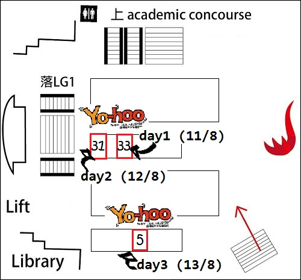

News
-
最新活動：一路向西灣OCamp!
好玩、熱血嘅沙灘露營！仲有真火CAMP FIRE，刺激嘅溯澗之旅，只係$99！
仲諗？一齊一路向西灣啦！
-
Reg Day Counter
下星期一連三日係新生註冊日，到時我地都會嚮Atrium擺Counter，
歡迎大家過黎吹水、fing、同埋報我地嘅OCamp :)！ -
迎新攻略
JUPAS後榜後入左UST無從入手？唔洗驚，Yo-hoo嚮大廳。
黎我地個迎新攻略網啦，資料一樣俱全，唔明仲可以搵EXCO！
-
Promotion Video 2014
來年活動有咩玩？唔洗講咁多，去片！
-
來年活動?
Stay Tuned.


 2. 橫棍位置應在直棍的雙套結上方。將繩（連纏繞的繩頭）向上從右方搭在橫棍上，繞過直棍後方，再向前搭在橫棍左方，然後在橫棍下繞過直棍後方，回到起點。一面繞，一面用暗力將繩索拉緊。
2. 橫棍位置應在直棍的雙套結上方。將繩（連纏繞的繩頭）向上從右方搭在橫棍上，繞過直棍後方，再向前搭在橫棍左方，然後在橫棍下繞過直棍後方，回到起點。一面繞，一面用暗力將繩索拉緊。